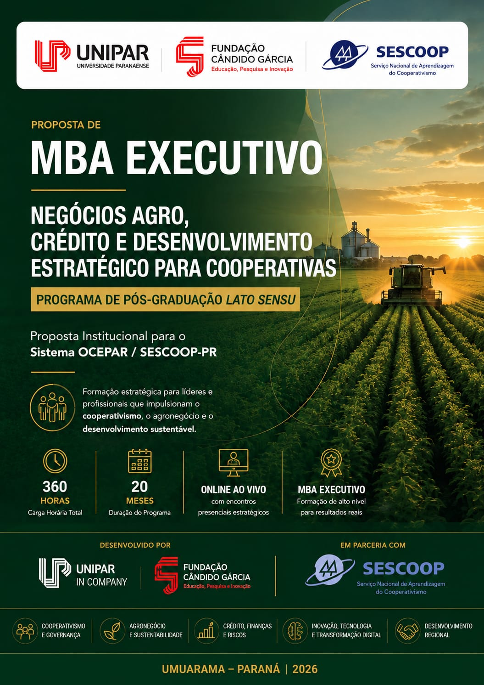

MBA em Negócios Agro, Crédito e Desenvolvimento Estratégico para Cooperativas
MBA executivo
Formação estratégica para profissionais das cooperativas de crédito, conectando crédito rural, agronegócio, gestão, tecnologia e desenvolvimento sustentável.

MBA prepara profissionais para os novos desafios do crédito e do agronegócio cooperativo no Paraná
Formação reúne conhecimento sobre cooperativismo, crédito rural, cadeias produtivas, gestão estratégica, tecnologia e desenvolvimento sustentável.
Com início previsto para outubro de 2026 e conclusão prevista para maio de 2028, o MBA Executivo em Negócios Agro, Crédito e Desenvolvimento Estratégico para Cooperativas tem carga horária de 360 horas, duração prevista de 20 meses e é oferecido em formato híbrido.
O programa foi estruturado para atender às demandas atuais das cooperativas de crédito do Paraná, preparando gestores, líderes e profissionais para uma atuação mais estratégica, consultiva e integrada no agronegócio.
A iniciativa é desenvolvida pela Universidade Paranaense (UNIPAR) e pela Unipar In Company, em parceria com a Fundação Cândido Garcia e o SESCOOP/PR. A proposta busca ampliar a capacidade dos profissionais de compreender o cooperado de forma integral, avançando de uma atuação tradicional como agente financeiro para uma atuação como consultor estratégico de negócios.
Uma formação conectada às cadeias produtivas do agronegócio
O MBA apresenta o agronegócio de maneira sistêmica, mostrando como se relacionam os fornecedores de insumos, os produtores rurais, as cooperativas, as agroindústrias, os distribuidores, os mercados consumidores e as instituições financeiras.
Compreender essa cadeia de forma integrada é essencial para que o profissional da cooperativa de crédito identifique necessidades, riscos e oportunidades em cada elo.
Cadeias produtivas abordadas na formação:
- Grãos
- Pecuária
- Leite
- Aves
- Suínos
- Café
- Cana-de-açúcar
- Frutas
- Hortaliças
- Agroindústria
O objetivo não é formar especialistas exclusivamente em uma única produção, mas preparar profissionais das cooperativas de crédito para compreender diferentes negócios do campo e relacioná-los às soluções financeiras adequadas.
As 15 disciplinas do MBA
O programa é composto por 15 disciplinas que conectam cooperativismo, crédito rural, agronegócio, gestão, tecnologia e sustentabilidade, apresentadas na sequência a seguir:
Cooperativismo Agropecuário e Desenvolvimento Regional
Aborda a evolução do cooperativismo agropecuário brasileiro, seus princípios e modelos de governança, o Sistema OCB, a OCEPAR e o SESCOOP, a integração entre cooperativas agropecuárias e cooperativas de crédito e o papel das cooperativas no desenvolvimento econômico e social dos territórios.
Crédito Rural e Legislação Aplicada ao Agronegócio
Estuda o funcionamento do crédito rural e a legislação que o regula, preparando o profissional para compreender normas, instrumentos e responsabilidades aplicadas às operações de financiamento do agronegócio.
Programas Oficiais de Crédito Rural e Políticas Públicas para o Agronegócio
Apresenta os programas oficiais de crédito rural e as políticas públicas voltadas ao agronegócio, permitindo relacionar linhas de financiamento e incentivos às necessidades dos cooperados e das cadeias produtivas.
Análise Financeira da Propriedade Rural e Gestão Econômica do Produtor
Desenvolve a capacidade de analisar a situação econômica e financeira da propriedade rural, apoiando decisões de crédito e a gestão econômica do produtor.
Gestão de Riscos e Concessão de Crédito no Agronegócio
Trabalha a identificação, a avaliação e o acompanhamento de riscos e os critérios de concessão de crédito no agronegócio, contribuindo para decisões mais seguras e responsáveis.
Cadeias Produtivas do Agronegócio e Oportunidades de Negócios para Cooperativas de Crédito
Analisa as cadeias produtivas do agronegócio de forma sistêmica e as oportunidades de negócios que elas representam para as cooperativas de crédito.
Gestão da Propriedade Rural e Profissionalização do Negócio Agropecuário
Aborda a gestão da propriedade rural e a profissionalização do negócio agropecuário, aproximando o profissional da realidade produtiva e administrativa do produtor.
Tecnologia, Inovação e Inteligência Artificial Aplicadas ao Agronegócio
Apresenta as transformações tecnológicas do campo — Agricultura 4.0 e 5.0, agricultura de precisão, Internet das Coisas, análise de dados, automação, plataformas digitais, conectividade rural e inteligência artificial — e suas possibilidades para as cooperativas de crédito.
Produtos Financeiros Agro e Soluções de Crédito para o Agronegócio
Estuda os produtos financeiros agro e as soluções de crédito voltadas ao agronegócio, relacionando-os às necessidades dos diferentes negócios do campo.
Atendimento Consultivo ao Cooperado e Relacionamento Estratégico no Agronegócio
Desenvolve a abordagem consultiva, a compreensão do negócio do cooperado e a construção de relacionamentos estratégicos e de longo prazo no agronegócio.
ESG, Sustentabilidade e Compliance no Agronegócio
Trabalha os temas de ESG, sustentabilidade e compliance aplicados ao agronegócio, conectando responsabilidade, governança e visão de futuro à atuação das cooperativas.
Recuperação de Crédito Rural, Renegociação e Gestão da Inadimplência no Agronegócio
Aborda a recuperação de crédito rural, a renegociação e a gestão da inadimplência no agronegócio, completando o ciclo de concessão e acompanhamento do crédito.
Liderança e Gestão de Equipes nas Cooperativas de Crédito Agro
Desenvolve competências de liderança e de gestão de equipes voltadas à realidade das cooperativas de crédito que atuam no agronegócio.
Estratégia Comercial para Cooperativas de Crédito e Desenvolvimento da Carteira Agro
Trabalha a estratégia comercial das cooperativas de crédito e o desenvolvimento da carteira agro, integrando visão de negócio e relacionamento com o cooperado.
Consultoria Financeira, Planejamento Estratégico e Desenvolvimento Sustentável do Cooperado Agro
Integra consultoria financeira, planejamento estratégico e desenvolvimento sustentável do cooperado agro, consolidando a atuação do profissional como consultor estratégico de negócios.
Crédito rural como ferramenta estratégica
O crédito rural ocupa posição central na formação. Ao longo das disciplinas, o programa trabalha a legislação, as políticas públicas, a análise financeira, a gestão de riscos, os produtos financeiros, a concessão, o acompanhamento e a recuperação de crédito.
A proposta reforça que uma operação de crédito não deve ser analisada isoladamente, mas compreendida dentro do contexto do produtor, da propriedade e da cadeia produtiva em que ele está inserido.
Do profissional de crédito ao consultor estratégico
Um dos objetivos do MBA é transformar a maneira como o profissional das cooperativas se relaciona com o produtor rural.
A formação enfatiza a abordagem consultiva, a compreensão do negócio, o relacionamento de longo prazo, a identificação das necessidades do cooperado e a construção de soluções financeiras personalizadas.
Tecnologia e inteligência artificial também entram em campo
O programa apresenta as principais transformações tecnológicas que impactam o agronegócio e as cooperativas de crédito.
Entre os conteúdos trabalhados estão:
- Agricultura 4.0
- Agricultura 5.0
- Agricultura de precisão
- Internet das Coisas
- Análise de dados
- Automação
- Plataformas digitais
- Conectividade rural
- Inteligência artificial
O objetivo é preparar profissionais para compreender as transformações tecnológicas do campo e as novas possibilidades que elas abrem para as cooperativas de crédito.
Gestão, sustentabilidade e desenvolvimento regional
A formação relaciona gestão, governança, sustentabilidade, ESG, inovação e desenvolvimento regional.
Mantém-se a compreensão de que as cooperativas são agentes importantes no fortalecimento de produtores, cadeias produtivas e comunidades.
Formação para quem vive o cooperativismo
O MBA foi estruturado principalmente para gestores, líderes e profissionais das cooperativas de crédito do Paraná.
Também é indicado para profissionais envolvidos com:
- Crédito
- Negócios
- Relacionamento com cooperados
- Gestão comercial
- Agronegócio
Uma parceria voltada ao futuro do cooperativismo
O programa aproxima universidade, sistema cooperativista e mercado, combinando conhecimento acadêmico e aplicação prática.
Ao longo dos 20 meses de formação, o MBA reúne os temas do cooperativismo, do crédito rural, das cadeias produtivas, da gestão estratégica, da tecnologia e do desenvolvimento sustentável, preparando profissionais para uma atuação estratégica e consultiva junto ao cooperado.
Mais do que uma pós-graduação, a proposta é formar profissionais preparados para transformar conhecimento em decisões, soluções financeiras, negócios e desenvolvimento para o cooperativismo paranaense.
UNIPAR + Unipar In Company + Fundação Cândido Garcia + SESCOOP/PR. Uma parceria pela formação, pelo crédito e pelo desenvolvimento estratégico do agronegócio cooperativo.
Unipar In Company — Educação que transforma conhecimento em evolução.